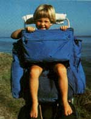
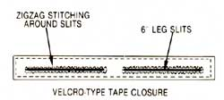
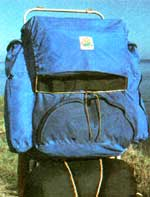

If you're a parent with the traveling fever, you can keep on truckin'. . . with your tot in tow!
Are you a hiking parent faced with the problem of what to do with Baby while you trek the wilds? It seems that a lot of folks who don't have access to grandparents-or to other free, long-term baby-sitters-often just resign themselves to non backpacking lives until their young sprouts are big enough to tag along under their own steam. At least, that's what my husband and I were on the verge of doing ... when we figured out an easy, inexpensive way to convert a frame backpack to perform double duty as a carrier for our son.
Nowadays, our young'un rides comfortably and safely in the top portion of my pack, with his legs dangling through special openings, while the pack's bottom and side pouches still tote camping gear. In fact, I've found this arrangement to be so handy and comfortable (for me, as well as my tot) that I even use it for running around-town errands. I can carry my child and my purchases on my back, and be free of the hassles that usually go with trying to shop and keep track of a toddler simultaneously.
HERE'S THE HOW-TO OF IT
The conversion takes only a few minutes and an investment of about $3.00 ... and it leaves your pack virtually unharmed for "normal" (that is, nonkid) carrying. But in order for this alteration to work, you'll need an external-frame pack that has two main compartments in back ... an upper and a lower. Luckily, since this two-pocket arrangement is a fairly common style for this type of carrier, you shouldn't have trouble locating one (if you're not already so equipped). Your child will be riding on the base, or "floor" of the upper compartment, with his or her legs dangling in toewiggling freedom through slits cut into the pack material and reinforced with Velcro-type tape.
All that's required-besides a pack and a child, of course-is a 2" -wide strip of the self adhering tape, about 18" long (measure the width of the back of your pack to determine the exact length of the strip you'll need).
Separate the two sides of the tape, and sew the portion with the soft, fuzzy surface horizontally across the outside of your carrier, aligned just above the base of the top compartment. Remove the pack from its frame and sew the edges of the strip securely to the sack's material.
Now mark the horizontal center point of the tape and then start your leg-slit measurements an inch or two on either side of the mark (as shown in the diagram). Next, draw a straight line about 6 inches long for each of the leg openings, and zigzag with your machine-or hand-sew-securely around the marks to insure that the material doesn't rip or unravel.
Finally, cut along the lines to open the slits, trimming off any ragged edges that might rub against tender young skin ... and you're finished!
ON THE TRAIL AGAIN!
Your youngster can now ride along on your family's foot-powered outings, and the remainder of your pack will be free for equip ment stashing. Of course, you'll have to pack carefully in order to fit in Baby, his or her special necessities, and your own goods ... but I've learned a few space-saving tricks that should help.
First, wrap spare diapers around the metal bar at the top of the pack frame. This not only protects the child's head from bumps, but also saves space in the pack. Cloth diapers take up less space than disposables, and just a couple should get you through the day if they're rinsed out and pinned to the outside of the pack to dry as you walk.
Stuff clothes and other soft items around and under your child's bottom to provide padded seat comfort, a snug fit, and the "lift" that very small children need in order to see over the top of the pack.
When hiking through really rugged terrain, you can rig up a "safety belt" that goes around your little passenger's waist and fastens to the backpack frame on both sides. And if you want maximum safety (and peace of mind), your tyke can even wear a bicyclist's lightweight plastic helmet.
Furthermore, any time you're hiking without the child, you can seal up the leg slits by smacking on the matching ("hooked") side of the self-adhering tape to return your backpack to full service! Sure, with human cargo and your gear in the pack, you'll be bumping a respectable load. But you and your mate can work out an equitable distribution of weight ... trade off the kid-carrying chores ... or hike with friends to spread the load around even more.
My husband and I have found it well worth carrying the extra weight to be back on the trail and in the woods again. In fact, the joys of being able to share the wonders of nature with our son has made our "piggyback" backpack tripping the best ever!
|
 |
 |
 |